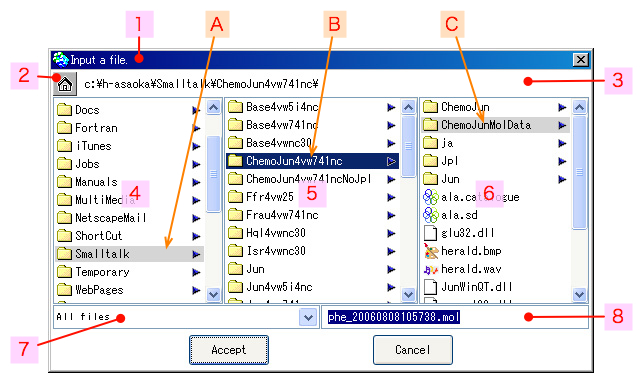

2006年08月08日 文責：浅岡 浩子
もくじ：
ビューアで表示するファイルを指定して開いたり、 ファイルなどを保存する際に、ファイルナビゲータを利用します。
目的の種類のファイルのみを表示したり、現在パスの確認が可能です。
ファイルナビゲータの画面は以下のようになっています。

状況に応じて、ファイルタイプや、入力フォルダ／ファイル名のエリアなどは表示されなくなります。
メッセージが表示されます。
既存のファイルを指定するのか、新しいディレクトリ名を入力するのか、実行している状況によって操作が違います。
何をすればいいのか分からないときは、ラベルのメッセージを確認してください。
ボタンを押すと、VisualWorks の仮想イメージのあるフォルダに、すぐに移動します。
ホームボタンの横には、現在表示しているパスが表示されます。
その箇所でマウスの右クリックボタンを押すと、コピーメニューが表示されます。
メニューを選択すると、パスをコピーバッファに入れることができます。
現在選択している対象の一階層上のフォルダやファイルを一覧で表示します。
左ビュー内に、薄い色で選択状態で表示されます。
現在選択しているフォルダ／ファイルを表示します。
同じ階層にあるフォルダやフォルダも一覧で表示します。
中心ビュー内に、選択状態で表示されているものが、現在選択しているフォルダ／ファイルになります。
現在選択している対象がファイルの場合、ファイルの詳細データが表示されます。
現在選択している対象がフォルダの場合、その中にあるフォルダやファイルを一覧で表示します。
このエリアでフォルダやファイルを選択すると、 今までこの右ビューで表示されていたものが中心ビューに移動します。
選択したフォルダのサブフォルダや、ファイルの詳細がこの右ビューに表示されます。
右ビュー内に、選択した履歴を薄い色で表示します。
中心ビューで、現在選択している対象がフォルダの場合、その中にあるフォルダで以前に選択されたフォルダ／ファイルが、薄い色で選択状態になります。
選択した履歴がない場合は、一番上のものが薄い色で選択状態になります。
ファイルの種類を限定する場合に、ファイルタイプが表示されています。
例えば、「分子ファイル」の場合は、拡張子が「*.mol」のファイルのみが一覧されるようになります。
プルダウンボタンを押して、「すべてのファイル」項目を選択すると、全てのファイルを一覧することができます。
フォルダ／ファイル名を指定して保存する場合に、生成するフォルダ／ファイル名が表示されています。
デフォルトで現在の年月日等が入力されているはずですが、 変更する場合は、ここで編集してから承認ボタンを押します。
生成する場所は、現在パスで表示されているフォルダになります。
現在パスに、ファイルが表示されている場合は、そのファイルが格納されているフォルダに生成されます。
フォルダ・ファイル選択のウィンドウを選択している時に、 下表のキーボードショートカットが使用できます。
※ 106 かな漢字キーボード対応
| ← | 左ビューで選択されているものを、中心ビューで選択状態にします。 （上位階層へ移動） |
|---|---|
| → | 右ビューで選択されているものを、中心ビューで選択状態にします。 （下位階層へ移動） |
| ↑ | 中心ビューで選択されているものの真上にリストされているものを、選択状態にします。 |
| ↓ | 中心ビューで選択されているものの真下にリストされているものを、選択状態にします。 |
フォルダ／ファイル名の頭文字にマッチするものを選択します。
| 中心ビューで、選択しているものよりも下にリストされているものが対象となります。 | |
| [Shift]+ | 中心ビューで、選択しているものよりも上にリストされているものが対象となります。 |